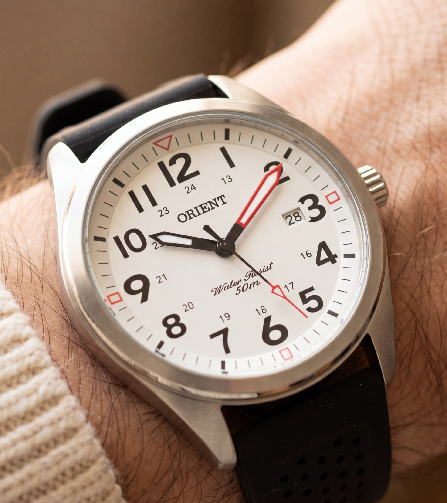
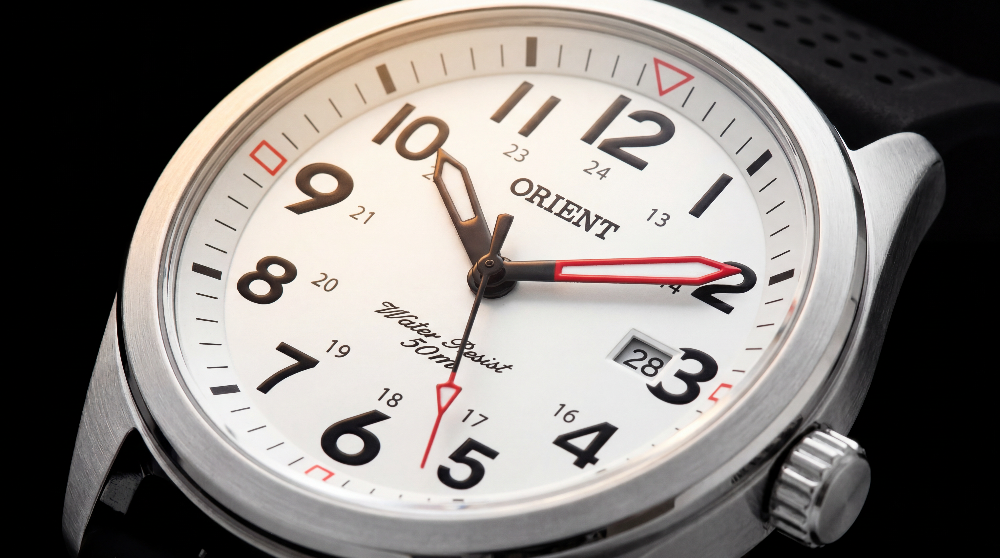

Movimento de quartzo de precisão. Caixa em aço inoxidável. Resistência à água certificada. O primeiro relógio que você compra para usar pelos próximos dez anos.

Engenharia japonesa. Construção em aço. Resistência certificada. Pelo preço de um jantar bom.
Por dentro, um movimento de quartzo desenvolvido pela Orient. A mesma engenharia de relógios mecânicos dez vezes mais caros.

A caixa é usinada em aço inoxidável e finalizada com escovação satinada. Resistente a arranhões do dia a dia. A proporção exata entre funcionalidade e elegância.

316L
Aço inoxidável cirúrgico
Mineral
Cristal endurecido
42 × 11
Diâmetro × espessura (mm)

Certificação 5 ATM. Lave as mãos, tome banho, nade na piscina ou enfrente uma tempestade sem pensar duas vezes. A vedação é testada à pressão equivalente a 50 metros de profundidade. Você nunca mais precisa tirar o relógio.
O mostrador foi projetado para uma única função: comunicar tempo com clareza absoluta.

Tudo o que você precisa saber, em uma única tabela.
Por que escolher Orient e não uma marca mais conhecida?
Orient é uma das maiores fabricantes japonesas de relógios — pertence ao mesmo grupo da Seiko. A diferença é que Orient não investe em marketing global, então você paga pela engenharia, não pela publicidade.
O movimento é fabricado no Japão?
Sim. O movimento de quartzo é desenvolvido e calibrado nas fábricas da Orient no Japão.
Posso nadar com ele?
Sim. Com 5 ATM de resistência (50 metros), você pode usar no banho, na piscina e em natação recreativa. Para mergulho profissional, recomendamos modelos específicos.
A pulseira pode ser trocada?
Sim. A pulseira é padrão de 22mm e pode ser substituída por qualquer modelo compatível — couro, aço, nylon.
Qual a garantia?
1 ano de garantia internacional Orient cobrindo defeitos de fabricação. Suporte em rede autorizada no Brasil.
Como é a precisão comparada a um smartwatch?
Diferente. Um smartwatch depende de bateria diária e atualizações. Este relógio mantém precisão de ±20 segundos por mês com 3 anos de autonomia. Você nunca tira do pulso.
Outros relógios param em seis meses. Este é diferente.
É o tipo de objeto que você usa hoje e ainda estará no seu pulso na próxima década.
Comprar agoraFrete grátis · 7 dias para troca · 1 ano de garantia Orient